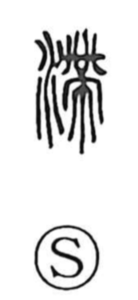

滞

Uncategorized
Kun: todokooru, todomaru | On: tai, tei
stagnate ・ be in arrears ・ be overdue
Explanation
Originally written 滯, this is a phono-semantic character: the water element shows the domain of meaning, while 帶 (modern 帯) supplies the sound tai. 帶 depicts a sash to which a ritual cloth (巾) is fastened—an image of something cinched tight. The Shuowen defines it as “to congeal, to stagnate,” evoking water that gathers and stays put, caught midway and unable to flow on. From this picture of water held back like a closed sash, the character came to mean to stagnate, fall behind, or be overdue.